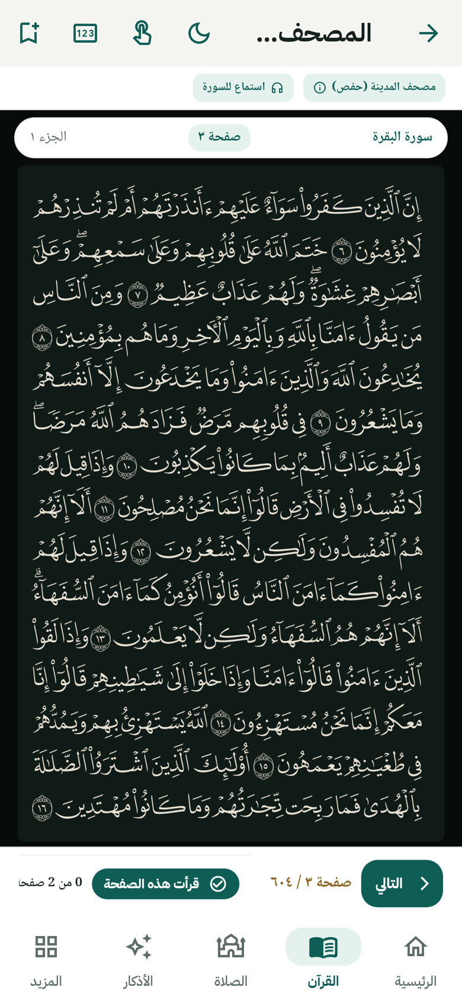

مصحف المدينة كامل بصوره
الـ٦٠٤ صفحة من مصحف المدينة النبوية (رواية حفص) بنفس شكل المطبوع، مع تكبير ولون صفحة يريّح عينك بالليل.
- لون الصفحة: أبيض أو كريمي أو ليلي
- لمسة واحدة تخفي كل الأزرار وتقرأ بملء الشاشة
- بحث في الآيات، علامات مرجعية، والانتقال لأي صفحة أو جزء
- تلاوة كاملة لكل سورة بصوت ١١ قارئ، وتكمل والشاشة مقفولة
